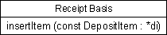
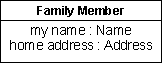
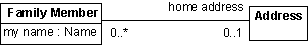
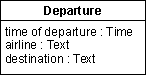
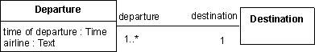
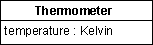

| Guideline: Design Class |
 |
|
| Related Elements |
|---|
DefinitionA design class represents an abstraction of one or several classes in the system's implementation; exactly what it corresponds to depends on the implementation language. For example, in an object-oriented language such as C++, a class can correspond to a plain class. Or in Ada, a class can correspond to a tagged type defined in the visible part of a package. Classes define objects, which in turn realize (implement) the use cases. A class originates from the requirements the use-case realizations make on the objects needed in the system, as well as from any previously developed object model. Whether or not a class is good depends heavily on the implementation environment. The proper size of the class and its objects depends on the programming language, for example. What is considered right when using Ada might be wrong when using Smalltalk. Classes should map to a particular phenomenon in the implementation language, and the classes should be structured so that the mapping results in good code. Even though the peculiarities of the implementation language influence the design model, you must keep the class structure easy to understand and modify. You should design as if you had classes and encapsulation even if the implementation language does not support this. OperationsThe only way other objects can get access to or affect the attributes or relationships of an object is through its operations. The operations of an object are defined by its class. A specific behavior can be performed via the operations, which may affect the attributes and relationships the object holds and cause other operations to be performed. An operation corresponds to a member function in C++ or to a function or procedure in Ada. What behavior you assign to an object depends on what role it has in the use-case realizations. ParametersIn the specification of an operation, the parameters constitute formal parameters. Each parameter has a name and type. You can use the implementation language syntax and semantics to specify the operations and their parameters so that they will already be specified in the implementation language when coding starts. Example: In the Recycling Machine System, the objects of a Receipt Basis class keep track of how many deposit items of a certain type a customer has handed in. The behavior of a Receipt Basis object includes incrementing the number of objects returned. The operation insertItem, which receives a reference to the item handed in, fills this purpose.
 Use the implementation language syntax and semantics when specifying operations. Class OperationsAn operation nearly always denotes object behavior. An operation can also denote behavior of a class, in which case it is a class operation. This can be modeled in the UML by type-scoping the operation. Operation VisibilityThe following visibilities are possible on an operation:
Public visibility should be used very sparingly, only when an operation is needed by another class. Protected visibility should be the default; it protects the operation from use by external classes, which promotes loose coupling and encapsulation of behavior. Private visibility should be used in cases where you want to prevent subclasses from inheriting the operation. This provides a way to de-couple subclasses from the super-class and to reduce the need to remove or exclude unused inherited operations. Implementation visibility is the most restrictive; it is used in cases where only the class itself is able to use the operation. It is a variant of Private visibility, which for most cases is suitable. StatesAn object can react differently to a specific message depending on what state it is in; the state-dependent behavior of an object is defined by an associated statechart diagram. For each state the object can enter, the statechart diagram describes what messages it can receive, what operations will be carried out, and what state the object will be in thereafter. Refer to Guideline: Statechart Diagram for more information. CollaborationsA collaboration is a dynamic set of object interactions in which a set of objects communicate by sending messages to each other. Sending a message is straightforward in Smalltalk; in Ada it is done as a subprogram call. A message is sent to a receiving object that invokes an operation within the object. The message indicates the name of the operation to perform, along with the required parameters. When messages are sent, actual parameters (values for the formal parameters) are supplied for all the parameters. The message transmissions among objects in a use-case realization and the focus of control the objects follow as the operations are invoked are described in interaction diagrams. See Guideline: Sequence Diagram and Guideline: Communication Diagram for information about these diagrams. AttributesAn attribute is a named property of an object. The attribute name is a noun that describes the attribute's role in relation to the object. An attribute can have an initial value when the object is created. You should model attributes only if doing so makes an object more understandable. You should model the property of an object as an attribute only if it is a property of that object alone. Otherwise, you should model the property with an association or aggregation relationship to a class whose objects represent the property. Example:
 An example of how an attribute is modeled. Each member of a family has a name and an address. Here, we have identified the attributes my name and home address of type Name and Address, respectively:
 In this example, an association is used instead of an attribute. The my name property is probably unique to each member of a family. Therefore we can model it as an attribute of the attribute type Name. An address, though, is shared by all family members, so it is best modeled by an association between the Family Member class and the Address class. It is not always easy to decide immediately whether to model some concept as a separate object or as an attribute of another object. Having unnecessary objects in the object model leads to unnecessary documentation and development overhead. You must therefore establish certain criteria to determine how important a concept is to the system.
You will probably model a concept differently for different systems. In one system, the concept may be so vital that you will model it as an object. In another, it may be of minor importance, and you will model it as an attribute of an object. Example: For example, for an airline company you would develop a system that supports departures.
 A system that supports departures. Suppose the personnel at an airport want a system that supports departures. For each departure, you must define the time of departure, the airline, and the destination. You can model this as an object of a class Departure, with the attributes time of departure, airline, and destination. If, instead, the system is developed for a travel agency, the situation might be somewhat different.
 Flight destinations forms its own object, Destination. The time of departure, airline, and destination will, of course, still be needed. Yet there are other requirements, because a travel agency is interested in finding a departure with a specific destination. You must therefore create a separate object for Destination. The objects of Departure and Destination must, of course, be aware of each other, which is enabled by an association between their classes. The argument for the importance of certain concepts is also valid for determining what attributes should be defined in a class. The class Car will no doubt define different attributes if its objects are part of a motor-vehicle registration system than if its objects are part of an automobile manufacturing system. Finally, the rules for what to represent as objects and what to represent as attributes are not absolute. Theoretically, you can model everything as objects, but this is cumbersome. A simple rule of thumb is to view an object as something that at some stage is used irrespective of other objects. In addition, you do not have to model every object property using an attribute, only properties necessary to understand the object. You should not model details that are so implementation-specific that they are better handled by the implementer. Class AttributesAn attribute nearly always denotes object properties. An attribute can also denote properties of a class, in which case it is a class attribute. This can be modeled in the UML by type-scoping the attribute. Modeling External Units with AttributesAn object can encapsulate something whose value can change without the object performing any behavior. It might be something that is really an external unit, but that was not modeled as an actor. For example, system boundaries may have been chosen so that some form of sensor equipment lies within them. The sensor can then be encapsulated within an object, so that the value it measures constitutes an attribute. This value can then change continually, or at certain intervals without the object being influenced by any other object in the system. Example: You can model a thermometer as an object; the object has an attribute that represents temperature, and changes value in response to changes in the temperature of the environment. Other objects may ask for the current temperature by performing an operation on the thermometer object.
 The value of the attribute temperature changes spontaneously in the Thermometer object. You can still model an encapsulated value that changes in this way as an ordinary attribute, but you should describe in the object's class that it changes spontaneously. Attribute VisibilityAttribute visibility assumes one of the following values:
Public visibility should be used very sparingly, only when an attribute is directly accessible by another class. Defining public visibility is effectively a short-hand notation for defining the attribute visibility as protected, private or implementation, with associated public operations to get and set the attribute value. Public attribute visibility can be used as a declaration to a code generator that these get/set operations should be automatically generated, saving time during class definition. Protected visibility should be the default; it protects the attribute from use by external classes, which promotes loose coupling and encapsulation of behavior. Private visibility should be used in cases where you want to prevent subclasses from inheriting the attribute. This provides a way to de-couple subclasses from the super-class and to reduce the need to remove or exclude unused inherited attributes. Implementation visibility is the most restrictive; it is used in cases where only the class itself is able to use the attribute. It is a variant of Private visibility, which for most cases is suitable. Internal StructureSome classes may represent complex abstractions and have a complex structure. While modeling a class, the designer may want to represent its internal participating elements and their relationships, to make sure that the implementer will accordingly implement the collaborations happening inside that class. In UML 2.0, classes are defined as structured classes, with the capability to have a internal structure and ports. Then, classes may be decomposed into collections of connected parts that may be further decomposed in turn. A class may be encapsulated by forcing communications from outside to pass through ports obeying declared interfaces. Thus, in addition to using class diagrams to represent class relationships (e.g. associations, compositions and aggregations) and attributes, the designer may want to use a composite structure diagram. This diagram provides the designer a mechanism to show how instances of internal parts play their roles within an instance of a given class. For more information on this topic and examples on composite structure diagram, see Concept: Structured Class. |
© Copyright IBM Corp. 1987, 2006. All Rights Reserved. |